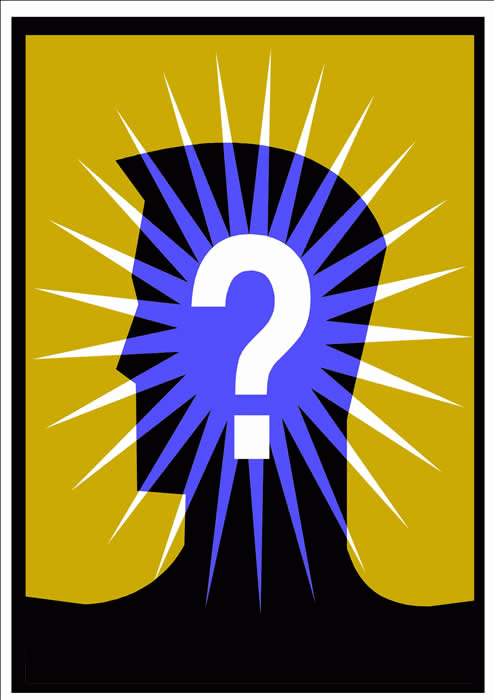

|  | Uitslag 23ste FAMILIEQUIZ (vrijdag 21 februari 2014) |
| Plaats | Nr | Ploegnaam | Totaal |
| 1 | 2 | De Dummies | 127 |
| 2 | 3 | weeralmis | 125* |
| 3 | 18 | Sjareltje Vuylsteke | 125* |
| 4 | 7 | De Herrezen Glorie | 124 |
| 5 | 24 | NIVO NIHIL | 119* |
| 6 | 51 | It's aliiiiiiive! | 119* |
| 7 | 40 | krek waj zek | 119* |
| 8 | 48 | Kleurenwhist | 117 |
| 9 | 13 | SK Lofristi | 115* |
| 10 | 6 | 't Kapelleken | 115* |
| 11 | 20 | Handelsoep met letterkes | 113 |
| 12 | 12 | Gratis chips op aanvraag | 111* |
| 13 | 22 | ploeg zonder naam | 111* |
| 14 | 44 | Dhaese&Walput | 109 |
| 15 | 50 | De Kelly's en de Kenny's | 107 |
| 16 | 38 | 60-70-80-90 | 105 |
| 17 | 41 | Terug van weggeweest | 101* |
| 18 | 4 | Tsjinglepipikoekoek | 101* |
| 19 | 16 | Winnen is ook wat | 100* |
| 20 | 35 | ターボターボ | 100* |
| 21 | 25 | WTC Gezoarde | 99* |
| 22 | 28 | wewetennieofwegaanwinnen | 99* |
| 23 | 14 | Dino's zijn de max! | 99* |
| 24 | 42 | El Trulli | 99* |
| 25 | 11 | Roma Victor! | 97* |
| 26 | 26 | Wemmenem | 97* |
| 27 | 32 | De Stijve Tepelkes | 96* |
| 28 | 47 | loslopende eenhoorns | 96* |
| 29 | 34 | Who let den Jons out?! | 95 |
| 30 | 45 | the fellowship of Rochefort | 94* |
| 31 | 33 | Koala Commission | 94* |
| 32 | 19 | Het O.C.'tje | 92 |
| 33 | 43 | We komen er wel | 91 |
| 34 | 27 | Hier voor bier | 90 |
| 35 | 15 | Sjareltje 2 | 88 |
| 36 | 46 | Fingerspitzengefühl | 85 |
| 37 | 39 | We zijn maar met 4 | 84* |
| 38 | 30 | Hier voor nog meer bier | 84* |
| 39 | 29 | Team Foxtrott | 84* |
| 40 | 1 | Het Zonnebloempjes P-team | 83 |
| 41 | 9 | De 6 quizketiers | 82 |
| 42 | 37 | De grote gezinnen | 81 |
| 43 | 23 | Jalapino | 79* |
| 44 | 52 | Het Zonnebloempjes M-team | 79* |
| 45 | 31 | Onder Nul | 77 |
| 46 | 5 | rottochopmetuwentussenstand | 75 |
| 47 | 49 | Tafel Dier | 72 |
| 48 | 10 | De Peperbollen | 71 |
| 49 | 36 | Be Happy Go Lucky | 69 |
| 50 | 21 | schoon gezelschap! | 67 |
| 51 | 17 | SLC is toch beter? | 60 |
| 52 | 8 | Sõbrad | 52 |